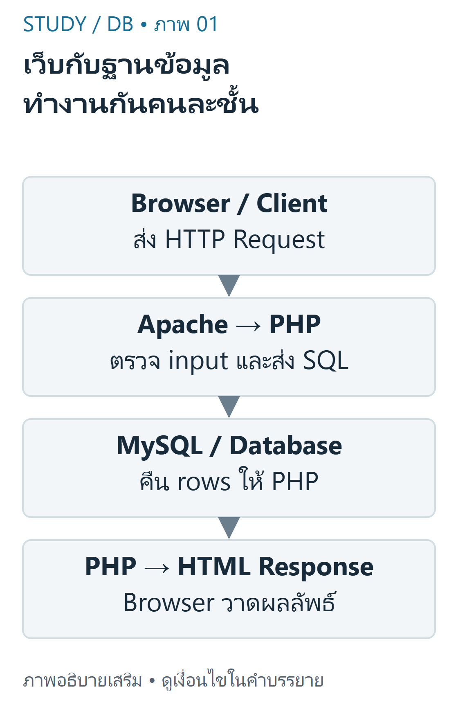
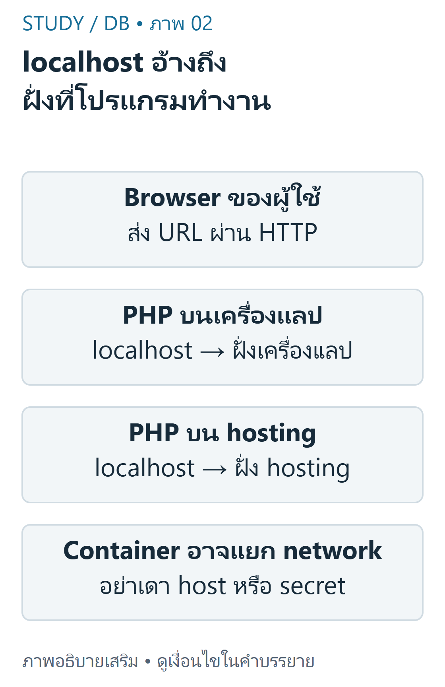

DB 01 — เว็บ เซิร์ฟเวอร์ และฐานข้อมูล บทนี้อธิบายระบบ PHP/MySQL ของแลปจาก DB-S01 หน้า3–13 และ DB-S03 หน้า3–6 โดยไม่อ้างว่า GitHub Pages ของ Study รัน PHP ได้
เป้าหมายการเรียนรู้ แยกหน้าที่ Browser, Apache, PHP, MySQL และ phpMyAdmin ไล่ HTTP Request/Response ของหน้า Resume ได้ตั้งแต่ต้นจนจบ อธิบาย localhost ตามเครื่องที่โปรแกรมกำลังทำงาน และเก็บข้อมูลเชื่อมต่ออย่างเหมาะสม แต่ละส่วนมีหน้าที่อะไร Browser เป็นโปรแกรมฝั่งผู้ใช้ (Client) ที่ร้องขอ URL และแสดง HTML ส่วน Apache เป็น Web Server ที่รับ HTTP และส่งงาน PHP ไปประมวลผลฝั่ง Server ในการติดตั้งตามแลป MySQL เป็น Database Server ที่รับคำสั่ง SQL ผ่านการเชื่อมต่อของ PHP ไม่ใช่ JavaScript ใน Browser ที่เปิดการเชื่อมต่อ MySQL โดยตรง

ภาพเขียนเสริม: เว็บกับฐานข้อมูล ทำงานกันคนละชั้น — ภาพสถาปัตยกรรม ไม่ใช่ผล deploy จริงภาพเขียนเสริม ตรวจตามบทเรียนและเอกสารเทคนิค อ่านภาพ: Browser ส่ง HTTP ไป Apache/PHP; PHP ส่ง SQL ไป MySQL แล้วรับ rows กลับมาประกอบ HTML ไม่ให้ Browser ต่อ MySQL ด้วย secret ของแอป
คำว่า Client/Server เป็นบทบาท ไม่ได้บังคับว่าต้องใช้เครื่องจริงคนละเครื่อง บนเครื่องแลป Apache, PHP, MySQL และ Browser อาจอยู่เครื่องเดียวกัน แผนภาพเป็นสถาปัตยกรรมตัวอย่าง ไม่ใช่ผลสำรวจบริการจริงบน Angsila
จาก Request ถึง Response ตัวอย่างพื้นฐานคือการเปิดหน้า Resume: Browser ส่ง GET → Apache เลือก PHP → PHP ส่ง SELECT ไป MySQL → MySQL คืน rows → PHP escape และประกอบ HTML → HTTP Response กลับ Browser การเชื่อมต่อนี้มีสองช่วง คือ HTTP ระหว่าง Browser/เว็บเซิร์ฟเวอร์ และ protocol ของ MySQL ระหว่าง PHP/ฐานข้อมูล
หาก PHP ส่งข้อความ พบ 3 ทักษะ กลับไป Browser จะเห็นข้อความนั้น ไม่ใช่ตัวแปร $rows หรือรหัสผ่านในไฟล์ config การกด View Source ของผลตอบกลับจึงไม่ได้แสดง PHP source ที่รันไปแล้ว เมื่อเซิร์ฟเวอร์ตั้งค่าถูกต้อง อย่างไรก็ดีการเผยแพร่ไฟล์ config หรือ repository เป็น public ยังเปิดเผยความลับได้
PHP คัดลอกโค้ด
1 <?php 2 header('Content-Type: text/html; charset=UTF-8'); 3 $count = 3; // ตัวอย่างค่าที่ได้รับหลัง query ไม่ใช่การต่อฐานข้อมูลจริงใน Browser 4 echo '<p>พบ ' . (int)$count . ' ทักษะ</p>'; ผลลัพธ์ HTTP body ที่ Browser ได้คือ <p>พบ 3 ทักษะ</p> ไม่ใช่โค้ด PHP ด้านบน ตัวอย่างนี้สาธิตการแยก execution/output; จำนวน3อ้างอิง skill ตัวอย่างใน DB-Z02 แต่ยังต้อง query จริงเมื่อนำไปทำแอป
Localhost และสิ่งแวดล้อม localhost ในการตั้งค่าฐานข้อมูลของ PHP หมายถึงเครื่องหรือ network namespace ที่ PHP process ทำงาน ถ้า PHP อยู่บนเครื่องนิสิตก็ชี้สภาพแวดล้อมท้องถิ่น ถ้าอยู่บน Angsila ก็อ้างอิงฝั่งเซิร์ฟเวอร์ตามการตั้งค่าของผู้ดูแล ไม่ได้หมายถึง Browser ของผู้ใช้ทุกคน และ container อาจมี namespace แยกต่างหาก

ภาพเขียนเสริม: localhost อ้างถึง ฝั่งที่โปรแกรมทำงาน — ตรวจ host/port/socket จริงก่อนเชื่อมภาพเขียนเสริม ตรวจตามบทเรียนและเอกสารเทคนิค อ่านภาพ: localhost ของ PHP บนเครื่องแลปอ้างสิ่งแวดล้อมของ PHP เครื่องนั้น ส่วน PHP บน hosting อ้างสิ่งแวดล้อมฝั่ง hosting ไม่ใช่ Browser ของผู้ใช้ Container อาจมี namespace แยก
สำหรับ mysqli บางระบบ localhost เลือก Unix socket ขณะที่ 127.0.0.1 เป็น TCP ต้องตรวจ host/port/socket ตามระบบจริง ไม่คัดลอกค่า root/รหัสผ่านว่างจากแลปไปใช้บน shared server
PHP คัดลอกโค้ด
1 <?php 2 mysqli_report(MYSQLI_REPORT_ERROR | MYSQLI_REPORT_STRICT); 3 $conn = mysqli_connect( 4 getenv('DB_HOST'), getenv('DB_USER'), getenv('DB_PASSWORD'), 5 getenv('DB_NAME'), (int)(getenv('DB_PORT') ?: 3306) 6 ); 7 mysqli_set_charset($conn, 'utf8mb4'); ตัวอย่าง connection แสดงรูปแบบการอ่าน Environment Variables; ต้องกำหนดค่าให้ครบก่อนใช้และไม่แสดง error/credentials แก่ผู้ชม ไฟล์ .env ไม่ถูก PHP โหลดอัตโนมัติเมื่อมีไฟล์เฉย ๆ การทดสอบจริงของบทใช้ฐานข้อมูล disposable แยกจากเครื่องผู้ใช้และ Angsila ไม่ใช่การยืนยันค่าข้างต้นบนมหาวิทยาลัย
ตัวอย่างต่อยอดและการวินิจฉัย ถ้าเปิด HTML ได้แต่ไม่มีรายการ ให้แยกตรวจทีละช่วง: HTTP status ถูกหรือไม่, PHP รันหรือแสดงเป็นข้อความ, mysqli ต่อฐานข้อมูลที่ตั้งใจหรือไม่, SELECT คืน0แถวหรือเกิด exception, และ HTML loop ใช้ rows ถูกชุดหรือไม่ อย่าแก้ด้วยการฝัง array แล้วสรุปว่าฐานข้อมูลทำงานแล้ว
ตัวอย่างที่ยากขึ้น: phpMyAdmin ใช้บัญชีหนึ่ง แต่ PHP ใช้อีก database/schema ทั้งสองหน้าจึงแสดงผลต่างกันได้โดยข้อมูลไม่ได้หาย ควรตรวจฐานข้อมูลที่เลือกด้วย SELECT DATABASE() บนการเชื่อมต่อทดสอบ ไม่ส่งรหัสผ่านลงรายงาน
SQL คัดลอกโค้ด
1 SELECT DATABASE() AS current_database; 2 SELECT COUNT(*) AS skill_rows FROM skill; ชื่อฐานข้อมูลขึ้นกับ environment ไม่ควรท่องชื่อที่ได้จากเครื่องอื่น ส่วน skill จาก DB-Z02 ก่อนแก้มี3แถว หากใช้ fixture คนละชุดต้องระบุให้ชัด
ขอบเขตความปลอดภัย จัดเก็บ secret นอก source ที่เผยแพร่ ตั้งสิทธิ์ไฟล์และบัญชีให้เหมาะสม ใช้ HTTPS ตามบริการจริง และตรวจ input ฝั่งเซิร์ฟเวอร์ phpMyAdmin มีไว้บริหารฐานข้อมูล ไม่ควรเอาบัญชีผู้ดูแลไปใช้เป็นสิทธิ์ปกติของแอป
เนื้อหาฝึกเขียนและเฉลยต่อไปนี้เรียบเรียงเพื่อการเรียน ไม่ใช่ข้อสอบจริงหรือเฉลยทางการของผู้สอน เว็บไซต์นี้แสดงตัวอย่างแบบ static; ไม่ส่ง SQL, PHP หรือข้อมูลบัญชีไปรันบนเซิร์ฟเวอร์มหาวิทยาลัย
ข้อผิดพลาดที่พบบ่อย บอกว่า phpMyAdmin เป็น MySQL Engine หรือ Browser รัน PHP เอง เข้าใจว่า localhost ของ PHP บนเซิร์ฟเวอร์คือคอมพิวเตอร์ของนิสิตเสมอ ใช้ข้อมูล hard-coded แล้วคิดว่าเป็นผล query นำ connection credentials ขึ้น public Git หรือทดลองกับฐานข้อมูลจริงที่มีงานสำคัญ ฝึกคิดพร้อมเหตุผล ข้อ1: หน้าเว็บมี PHP แต่ Browser ควรได้รับอะไร? เฉลย: ผลลัพธ์ที่ PHP สร้าง เช่น HTML; PHP source และตัวแปรเป็นส่วนประมวลผลฝั่ง Serverข้อ2: สามารถมีสอง protocol ในหนึ่งการเปิดหน้าได้หรือไม่? เฉลย: ได้ HTTP ระหว่าง Browser/Apache และการเชื่อมต่อ MySQL ระหว่าง PHP/DB ทำหน้าที่ต่างกันข้อ3: ถ้าไฟล์ PHP บน GitHub Pages ไม่ทำงาน ต้องย้าย MySQL ไป Browser หรือไม่? เฉลย: ไม่ ต้องใช้สภาพแวดล้อม PHP/MySQL ที่ได้รับอนุญาต; Study ยังคง static เพื่อเรียนเท่านั้นสรุปทบทวน แยก Web Server, PHP runtime, Database Server และเครื่องมือบริหาร ตรวจคำขอ การประมวลผล query และผลตอบกลับเป็นคนละช่วง ตรวจ environment จริงและไม่เผย secret; การ deploy ต้องได้รับอนุญาต แหล่งข้อมูลและขอบเขต DB-S01 หน้า3–13,33–36; DB-S03 หน้า3–6; DB-Z01 LAB_INSTRUCTIONS.md, index.php และโครงสร้าง config. อ้างอิงเสริม PHP mysqli และ GitHub Pages limits .
บัญชีแหล่งข้อมูลและข้อจำกัด ระบุเลขหน้ากายภาพของ PDF ทุกครั้ง เอกสารต้นฉบับที่ผู้ใช้ให้เป็นไฟล์ local-only และไม่ได้เผยแพร่ซ้ำ ภาพและโจทย์ฝึกเป็นงานเขียนเสริมที่แยกจากต้นฉบับ
โหมดฝึกทำโจทย์ โจทย์ฝึกที่ผู้เขียนจัดทำ ไม่ใช่ข้อสอบจริงหรือเฉลยทางการ; การประเมินตนเองไม่รวมในคะแนนอัตโนมัติ
โจทย์ฝึกที่ผู้เขียนจัดทำ ไม่ใช่ข้อสอบจริง: ส่วนใดประมวลผล PHP ในระบบResumeตามแลป? A. Browser HTML parser B. PHP runtime ฝั่งServer C. MySQL storage engine D. CSS renderer ทบทวนเนื้อหาที่เกี่ยวข้อง อ่านเฉลยและแนวประเมิน PHP runtime ฝั่งServer
ApacheรับHTTPและส่งPHPให้runtime; BrowserรับผลHTML
โจทย์ฝึกที่ผู้เขียนจัดทำ ไม่ใช่ข้อสอบจริง: BrowserเปิดResumeที่ใช้MySQL เส้นทางใดถูกต้อง? A. Browserส่งSQLด้วยHTTPตรงเข้าMySQL B. phpMyAdminต้องสร้างทุกresponse C. HTTPไปเว็บserver แล้วPHPqueryMySQLและคืนHTML D. GitHubประมวลผลPHPก่อนทุกrequest ทบทวนเนื้อหาที่เกี่ยวข้อง อ่านเฉลยและแนวประเมิน HTTPไปเว็บserver แล้วPHPqueryMySQLและคืนHTML
HTTPและprotocolDBเป็นคนละช่วง; PHPเป็นตัวเชื่อม
โจทย์ฝึกที่ผู้เขียนจัดทำ ไม่ใช่ข้อสอบจริง: phpMyAdminทำหน้าที่ใด? A. Database engineแทนMySQL B. ตัวรันPHPในBrowser C. ระบบbackupอัตโนมัติทุกcommit D. Web UI สำหรับจัดการMySQL ทบทวนเนื้อหาที่เกี่ยวข้อง อ่านเฉลยและแนวประเมิน Web UI สำหรับจัดการMySQL
เป็นแอปจัดการDB ไม่ใช่engineและไม่จำเป็นต่อทุกrequestของResume
โจทย์ฝึกที่ผู้เขียนจัดทำ ไม่ใช่ข้อสอบจริง: PHPบนserverมหาวิทยาลัยตั้งDB host=localhost โดยทั่วไปอ้างเครื่องใด? A. สิ่งแวดล้อมของPHP processบนserverนั้น B. เครื่องBrowserนิสิตทุกคน C. GitHubrepository D. เครื่องที่เคยcommitล่าสุด ทบทวนเนื้อหาที่เกี่ยวข้อง อ่านเฉลยและแนวประเมิน สิ่งแวดล้อมของPHP processบนserverนั้น
localhostสัมพันธ์กับprocess/networknamespace ไม่ใช่ผู้เปิดหน้าเว็บ
โจทย์ฝึกที่ผู้เขียนจัดทำ ไม่ใช่ข้อสอบจริง: เหตุใดไม่ใส่DB passwordในJavaScriptหน้าเว็บ? A. JavaScriptเข้ารหัสsecretให้อัตโนมัติ B. Clientอ่านโค้ดและค่าที่ส่งมาถึงBrowserได้ C. HTMLทำให้secretใช้ได้ครั้งเดียว D. CSSซ่อนpasswordจากnetwork ทบทวนเนื้อหาที่เกี่ยวข้อง อ่านเฉลยและแนวประเมิน Clientอ่านโค้ดและค่าที่ส่งมาถึงBrowserได้
secretต้องอยู่ฝั่งServerและไม่ส่งเข้าpublicasset
โจทย์ฝึกที่ผู้เขียนจัดทำ ไม่ใช่ข้อสอบจริง: อธิบายการเปิดResumeตั้งแต่GETถึงHTML โดยระบุprotocolสองช่วง ทบทวนเนื้อหาที่เกี่ยวข้อง อ่านเฉลยและแนวประเมิน ประเมินคำอธิบายตามเกณฑ์ทีละข้อ; โจทย์นี้ไม่มีคะแนนอัตโนมัติ
แยกHTTPกับDBprotocol ระบุPHPqueryและrender อธิบายBrowserไม่ได้รันPHP คลังข้อสอบฝึกเพิ่มเติม โจทย์ที่ผู้เขียนจัดทำ ไม่ใช่ข้อสอบจริง การประเมินตนเองไม่รวมคะแนน
โจทย์ฝึกที่ผู้เขียนจัดทำ ไม่ใช่ข้อสอบจริง: ส่วนใดประมวลผล PHP ในระบบResumeตามแลป? A. Browser HTML parser B. PHP runtime ฝั่งServer C. MySQL storage engine D. CSS renderer ทบทวนเนื้อหาที่เกี่ยวข้อง อ่านเฉลยและแนวประเมิน PHP runtime ฝั่งServer
ApacheรับHTTPและส่งPHPให้runtime; BrowserรับผลHTML
โจทย์ฝึกที่ผู้เขียนจัดทำ ไม่ใช่ข้อสอบจริง: BrowserเปิดResumeที่ใช้MySQL เส้นทางใดถูกต้อง? A. Browserส่งSQLด้วยHTTPตรงเข้าMySQL B. phpMyAdminต้องสร้างทุกresponse C. HTTPไปเว็บserver แล้วPHPqueryMySQLและคืนHTML D. GitHubประมวลผลPHPก่อนทุกrequest ทบทวนเนื้อหาที่เกี่ยวข้อง อ่านเฉลยและแนวประเมิน HTTPไปเว็บserver แล้วPHPqueryMySQLและคืนHTML
HTTPและprotocolDBเป็นคนละช่วง; PHPเป็นตัวเชื่อม
โจทย์ฝึกที่ผู้เขียนจัดทำ ไม่ใช่ข้อสอบจริง: phpMyAdminทำหน้าที่ใด? A. Database engineแทนMySQL B. ตัวรันPHPในBrowser C. ระบบbackupอัตโนมัติทุกcommit D. Web UI สำหรับจัดการMySQL ทบทวนเนื้อหาที่เกี่ยวข้อง อ่านเฉลยและแนวประเมิน Web UI สำหรับจัดการMySQL
เป็นแอปจัดการDB ไม่ใช่engineและไม่จำเป็นต่อทุกrequestของResume
โจทย์ฝึกที่ผู้เขียนจัดทำ ไม่ใช่ข้อสอบจริง: PHPบนserverมหาวิทยาลัยตั้งDB host=localhost โดยทั่วไปอ้างเครื่องใด? A. สิ่งแวดล้อมของPHP processบนserverนั้น B. เครื่องBrowserนิสิตทุกคน C. GitHubrepository D. เครื่องที่เคยcommitล่าสุด ทบทวนเนื้อหาที่เกี่ยวข้อง อ่านเฉลยและแนวประเมิน สิ่งแวดล้อมของPHP processบนserverนั้น
localhostสัมพันธ์กับprocess/networknamespace ไม่ใช่ผู้เปิดหน้าเว็บ
โจทย์ฝึกที่ผู้เขียนจัดทำ ไม่ใช่ข้อสอบจริง: เหตุใดไม่ใส่DB passwordในJavaScriptหน้าเว็บ? A. JavaScriptเข้ารหัสsecretให้อัตโนมัติ B. Clientอ่านโค้ดและค่าที่ส่งมาถึงBrowserได้ C. HTMLทำให้secretใช้ได้ครั้งเดียว D. CSSซ่อนpasswordจากnetwork ทบทวนเนื้อหาที่เกี่ยวข้อง อ่านเฉลยและแนวประเมิน Clientอ่านโค้ดและค่าที่ส่งมาถึงBrowserได้
secretต้องอยู่ฝั่งServerและไม่ส่งเข้าpublicasset
โจทย์ฝึกที่ผู้เขียนจัดทำ ไม่ใช่ข้อสอบจริง: อธิบายการเปิดResumeตั้งแต่GETถึงHTML โดยระบุprotocolสองช่วง ทบทวนเนื้อหาที่เกี่ยวข้อง อ่านเฉลยและแนวประเมิน ประเมินคำอธิบายตามเกณฑ์ทีละข้อ; โจทย์นี้ไม่มีคะแนนอัตโนมัติ
แยกHTTPกับDBprotocol ระบุPHPqueryและrender อธิบายBrowserไม่ได้รันPHP โจทย์ฝึกที่ผู้เขียนจัดทำ ไม่ใช่ข้อสอบจริง: ApacheกับMySQLต่างกันอย่างไร? A. ทั้งสองเป็นชื่อเดียวกัน B. MySQLrenderCSS ส่วนApacheเก็บตาราง C. ApacheแทนPK/FK D. ApacheรับHTTP ส่วนMySQLจัดเก็บและqueryข้อมูล ทบทวนเนื้อหาที่เกี่ยวข้อง อ่านเฉลยและแนวประเมิน ApacheรับHTTP ส่วนMySQLจัดเก็บและqueryข้อมูล
คนละบทบาท แม้ติดตั้งเครื่องเดียวกันได้
โจทย์ฝึกที่ผู้เขียนจัดทำ ไม่ใช่ข้อสอบจริง: PHP echoข้อความแล้วBrowserใช้View Source จะเห็นอะไรเมื่อตั้งserverถูกต้อง? A. HTMLที่PHPส่งกลับ B. PHPsourceพร้อมDBpasswordเสมอ C. SQLconnectionobjectจริง D. sessiondataทั้งหมดโดยอัตโนมัติ ทบทวนเนื้อหาที่เกี่ยวข้อง อ่านเฉลยและแนวประเมิน HTMLที่PHPส่งกลับ
serverประมวลผลPHPก่อนส่งผล แต่ไฟล์configที่publicยังเสี่ยงแยกกัน
โจทย์ฝึกที่ผู้เขียนจัดทำ ไม่ใช่ข้อสอบจริง: เหตุใด127.0.0.1กับlocalhostในmysqliอาจให้ผลต่างบนบางระบบ? A. 127.0.0.1เป็นIPของBrowserเสมอ B. อาจเลือกTCPกับUnixsocketต่างกัน C. localhostปิดauthentication D. เป็นชื่อtableที่ต่างกัน ทบทวนเนื้อหาที่เกี่ยวข้อง อ่านเฉลยและแนวประเมิน อาจเลือกTCPกับUnixsocketต่างกัน
ตรวจtransport/port/socketตามระบบ ไม่ถือว่าเหมือนกันทุกOS
โจทย์ฝึกที่ผู้เขียนจัดทำ ไม่ใช่ข้อสอบจริง: Client/Serverบังคับต้องเป็นเครื่องจริงคนละเครื่องหรือไม่? A. ต้องแยกอย่างน้อยสามเครื่อง B. ต้องใช้Cloudเสมอ C. ไม่ เป็นบทบาทที่อยู่เครื่องเดียวกันได้ D. ใช้localไม่ได้ ทบทวนเนื้อหาที่เกี่ยวข้อง อ่านเฉลยและแนวประเมิน ไม่ เป็นบทบาทที่อยู่เครื่องเดียวกันได้
เครื่องแลปอาจมีBrowser,Apache,PHP,MySQLร่วมกัน
โจทย์ฝึกที่ผู้เขียนจัดทำ ไม่ใช่ข้อสอบจริง: ถ้าMySQLคืน3rows งานใดควรเกิดก่อนส่งHTMLที่มีข้อมูลผู้ใช้? A. Browserแก้SQLก่อนquery B. ลบPKทุกแถว C. ส่งconnectionpasswordให้ผู้ใช้ D. PHPescapeค่าให้ถูกบริบทoutput ทบทวนเนื้อหาที่เกี่ยวข้อง อ่านเฉลยและแนวประเมิน PHPescapeค่าให้ถูกบริบทoutput
queryresultยังเป็นข้อมูลที่ต้องescapeก่อนแสดง
โจทย์ฝึกที่ผู้เขียนจัดทำ ไม่ใช่ข้อสอบจริง: GitHubPagesเหมาะกับส่วนใดของStudy? A. เสิร์ฟHTML/CSS/JSและตัวอย่างstatic B. รันPHPmysqliบนPagesเอง C. สร้างบัญชีMySQLบนPages D. ให้Apachemoduleตาม.env ทบทวนเนื้อหาที่เกี่ยวข้อง อ่านเฉลยและแนวประเมิน เสิร์ฟHTML/CSS/JSและตัวอย่างstatic
Pagesไม่ใช่PHP/MySQLhosting; lessonexamplesไม่ใช่livebackend
โจทย์ฝึกที่ผู้เขียนจัดทำ ไม่ใช่ข้อสอบจริง: เปิดหน้าconfigในpublicrepositoryแม้serverรันPHPถูกต้อง มีความเสี่ยงใด? A. PHPจะซ่อนGit historyเอง B. secretยังถูกอ่านจากrepositoryได้ C. ไม่มีความเสี่ยงเพราะนามสกุลphp D. READMEลบsecretให้อัตโนมัติ ทบทวนเนื้อหาที่เกี่ยวข้อง อ่านเฉลยและแนวประเมิน secretยังถูกอ่านจากrepositoryได้
การป้องกันHTTPresponseไม่เท่ากับป้องกันไฟล์ที่เผยแพร่
โจทย์ฝึกที่ผู้เขียนจัดทำ ไม่ใช่ข้อสอบจริง: เมื่อHTTPเปิดได้แต่DBconnectionล้ม ควรตรวจชั้นใดก่อน? A. แก้สีCSSอย่างเดียว B. เพิ่มVenn diagram C. host/port/สิทธิ์DBและconfigฝั่งPHP D. เปลี่ยนชื่อBrowser ทบทวนเนื้อหาที่เกี่ยวข้อง อ่านเฉลยและแนวประเมิน host/port/สิทธิ์DBและconfigฝั่งPHP
แยกปัญหาเว็บserverจากการเชื่อมDB ไม่เดาว่าระบบทั้งหมดเสีย
โจทย์ฝึกที่ผู้เขียนจัดทำ ไม่ใช่ข้อสอบจริง: ResponseกับRequestต่างกันอย่างไรในGETResume? A. Requestเก็บrowsถาวรในDB B. Responseเป็นคำสั่งGitpush C. ทั้งคู่ต้องเป็นSQL D. Requestร้องขอหน้า ส่วนResponseส่งผลกลับ ทบทวนเนื้อหาที่เกี่ยวข้อง อ่านเฉลยและแนวประเมิน Requestร้องขอหน้า ส่วนResponseส่งผลกลับ
HTTPมีทิศทางร้องขอและตอบกลับ ผลหน้าเว็บไม่ใช่DBprotocol
โจทย์ฝึกที่ผู้เขียนจัดทำ ไม่ใช่ข้อสอบจริง: นำค่าroot/passwordว่างจากแลปไปsharedserver ควรทำหรือไม่? A. ไม่ ตรวจบัญชีและสิทธิ์ที่ผู้ดูแลอนุมัติ B. ทำได้ทุกserverโดยไม่ขอสิทธิ์ C. จำเป็นเพราะmysqliรับได้แค่root D. ทำให้HTTPSเร็วขึ้น ทบทวนเนื้อหาที่เกี่ยวข้อง อ่านเฉลยและแนวประเมิน ไม่ ตรวจบัญชีและสิทธิ์ที่ผู้ดูแลอนุมัติ
การตั้งค่าสาธิตไม่เป็นpolicyของsharedhosting
โจทย์ฝึกที่ผู้เขียนจัดทำ ไม่ใช่ข้อสอบจริง: ข้อความDBerrorละเอียดควรส่งให้ผู้ใช้ทุกคนหรือไม่? A. ควรส่งsecretเพื่อdebugง่าย B. ไม่ ใช้ข้อความทั่วไปและlogที่ควบคุมสิทธิ์ C. ควรใส่.envในHTMLcomment D. ควรส่งstacktraceและpassword ทบทวนเนื้อหาที่เกี่ยวข้อง อ่านเฉลยและแนวประเมิน ไม่ ใช้ข้อความทั่วไปและlogที่ควบคุมสิทธิ์
ลดการเปิดเผยรายละเอียดระบบ; debugต้องอยู่ช่องทางเหมาะสม
โจทย์ฝึกที่ผู้เขียนจัดทำ ไม่ใช่ข้อสอบจริง: Browserต้องเชื่อมMySQLโดยตรงเพื่อแสดงResumeหรือไม่? A. ต้องรู้DBrootpassword B. ต้องติดตั้งphpMyAdminในBrowserทุกคน C. ไม่ PHPqueryแล้วประกอบHTMLได้ D. ต้องมีSQLsocketในCSS ทบทวนเนื้อหาที่เกี่ยวข้อง อ่านเฉลยและแนวประเมิน ไม่ PHPqueryแล้วประกอบHTMLได้
ในarchitectureนี้BrowserพูดHTTPกับapp
โจทย์ฝึกที่ผู้เขียนจัดทำ ไม่ใช่ข้อสอบจริง: PHPในcontainerตั้งlocalhostแต่DBอยู่อีกcontainer สรุปใดเหมาะสม? A. localhostชี้DBcontainerทุกตัว B. เปลี่ยนCSSแล้วต่อได้ C. BrowserเลือกDBcontainerให้ D. ต้องตรวจnetworknamespaceและชื่อserviceจริง ทบทวนเนื้อหาที่เกี่ยวข้อง อ่านเฉลยและแนวประเมิน ต้องตรวจnetworknamespaceและชื่อserviceจริง
namespaceแยกทำให้localhostไม่หมายถึงเครื่องhostหรือserviceอื่นเสมอ
โจทย์ฝึกที่ผู้เขียนจัดทำ ไม่ใช่ข้อสอบจริง: ตัวอย่างechoจำนวน3โดยกำหนดตัวแปรเอง พิสูจน์ว่าqueryDBผ่านหรือไม่? A. ไม่ สาธิตoutputเท่านั้น B. พิสูจน์ทั้งDBและAngsilaแล้ว C. พิสูจน์ว่าทุกprofileมี3skills D. พิสูจน์authorizationครบ ทบทวนเนื้อหาที่เกี่ยวข้อง อ่านเฉลยและแนวประเมิน ไม่ สาธิตoutputเท่านั้น
แยกค่าจำลองกับผลintegrationที่รันจริง
โจทย์ฝึกที่ผู้เขียนจัดทำ ไม่ใช่ข้อสอบจริง: ไฟล์.envที่มีค่าเชื่อมต่อควรอยู่ที่ใด? A. publicJavaScript B. ช่องทางconfigฝั่งServerที่ไม่publicและไม่commit C. รูปภาพfavicon D. captionของบทเรียน ทบทวนเนื้อหาที่เกี่ยวข้อง อ่านเฉลยและแนวประเมิน ช่องทางconfigฝั่งServerที่ไม่publicและไม่commit
sourceZIPมี.envจึงต้องกั้นไม่ให้เข้าคลังpublic
โจทย์ฝึกที่ผู้เขียนจัดทำ ไม่ใช่ข้อสอบจริง: MySQLคืนrowsให้PHPแล้วใครจัดรูปแบบการ์ดResume? A. FKวาดการ์ดให้ B. MySQLวาดCSSเอง C. PHPประกอบHTMLและBrowserวาดผล D. Gitสร้างDOMจากcommit ทบทวนเนื้อหาที่เกี่ยวข้อง อ่านเฉลยและแนวประเมิน PHPประกอบHTMLและBrowserวาดผล
databaseและpresentationเป็นคนละชั้น
โจทย์ฝึกที่ผู้เขียนจัดทำ ไม่ใช่ข้อสอบจริง: HTTPresponseมีHTMLถูกต้องแต่ตัวอักษรไทยเพี้ยน ควรตรวจอะไร? A. เปลี่ยนJOINเป็นCROSS B. ถอดWHEREทุกตัว C. เพิ่มDBrootสิทธิ์ทุกอย่าง D. encodingทั้งconnectionและHTTP/HTMLUTF-8 ทบทวนเนื้อหาที่เกี่ยวข้อง อ่านเฉลยและแนวประเมิน encodingทั้งconnectionและHTTP/HTMLUTF-8
encodingต้องสอดคล้องตั้งแต่DBถึงoutput; ไม่ใช่เหตุให้ขยายสิทธิ์
โจทย์ฝึกที่ผู้เขียนจัดทำ ไม่ใช่ข้อสอบจริง: คำกล่าวว่าได้deployAngsilaแล้วต้องมีหลักฐานใด? A. การทดสอบบนhostingจริงที่ได้รับอนุญาต B. แค่PHPCLI lintผ่าน C. มีภาพarchitecture D. มีURLในREADMEอย่างเดียว ทบทวนเนื้อหาที่เกี่ยวข้อง อ่านเฉลยและแนวประเมิน การทดสอบบนhostingจริงที่ได้รับอนุญาต
Static/CLI/browsermockไม่เท่ากับrealdeployment
โจทย์ฝึกที่ผู้เขียนจัดทำ ไม่ใช่ข้อสอบจริง: โค้ดSQLในreaderของStudyทำงานแบบใด? A. รันDROPบนserverอัตโนมัติ B. เป็นตัวอย่างอ่าน/คัดลอก ไม่รันDBจากหน้าเว็บ C. ส่งpasswordมหาวิทยาลัย D. ทำlivePHPlogin ทบทวนเนื้อหาที่เกี่ยวข้อง อ่านเฉลยและแนวประเมิน เป็นตัวอย่างอ่าน/คัดลอก ไม่รันDBจากหน้าเว็บ
GitHubPagesแสดงเนื้อหาและquizฝั่งclient
โจทย์ฝึกที่ผู้เขียนจัดทำ ไม่ใช่ข้อสอบจริง: แผนภาพBrowser→PHP→MySQLรับรองความปลอดภัยครบหรือไม่? A. รับรองเพราะมีลูกศร B. แทนCSRFได้ C. ไม่ ยังต้องvalidation,escapingและpermissions D. แทนHTTPSและsessionได้ ทบทวนเนื้อหาที่เกี่ยวข้อง อ่านเฉลยและแนวประเมิน ไม่ ยังต้องvalidation,escapingและpermissions
architectureสื่อบทบาท ไม่ใช่ผลsecurityauditทั้งหมด
โจทย์ฝึกที่ผู้เขียนจัดทำ ไม่ใช่ข้อสอบจริง: วิเคราะห์localhostเมื่อBrowserอยู่บ้านแต่PHPอยู่Angsila ทบทวนเนื้อหาที่เกี่ยวข้อง อ่านเฉลยและแนวประเมิน ประเมินคำอธิบายตามเกณฑ์ทีละข้อ; โจทย์นี้ไม่มีคะแนนอัตโนมัติ
อ้างprocessฝั่งPHP แยกBrowserจากserver ไม่เดาcredentialหรือpolicyมหาวิทยาลัย โจทย์ฝึกที่ผู้เขียนจัดทำ ไม่ใช่ข้อสอบจริง: อธิบายApache/PHP/MySQL/phpMyAdminให้เพื่อนเริ่มเรียน ทบทวนเนื้อหาที่เกี่ยวข้อง อ่านเฉลยและแนวประเมิน ประเมินคำอธิบายตามเกณฑ์ทีละข้อ; โจทย์นี้ไม่มีคะแนนอัตโนมัติ
ระบุหน้าที่แต่ละตัว ไม่เรียกphpMyAdminว่าengine ยอมให้หลายบทบาทอยู่เครื่องเดียว โจทย์ฝึกที่ผู้เขียนจัดทำ ไม่ใช่ข้อสอบจริง: วางแนวทางconfigและerrorhandlingโดยไม่เปิดเผยsecret ทบทวนเนื้อหาที่เกี่ยวข้อง อ่านเฉลยและแนวประเมิน ประเมินคำอธิบายตามเกณฑ์ทีละข้อ; โจทย์นี้ไม่มีคะแนนอัตโนมัติ
ไม่commit.env ไม่ส่งpasswordไปclient ใช้errorทั่วไปและlogควบคุมสิทธิ์ โจทย์ฝึกที่ผู้เขียนจัดทำ ไม่ใช่ข้อสอบจริง: เสนอวิธีแยกการทดสอบstaticPHPตัวอย่างกับDBintegrationจริง ทบทวนเนื้อหาที่เกี่ยวข้อง อ่านเฉลยและแนวประเมิน ประเมินคำอธิบายตามเกณฑ์ทีละข้อ; โจทย์นี้ไม่มีคะแนนอัตโนมัติ
ระบุสิ่งที่รันจริง ใช้databaseจำลองแยก ไม่อ้างว่าทดสอบAngsilaแล้ว